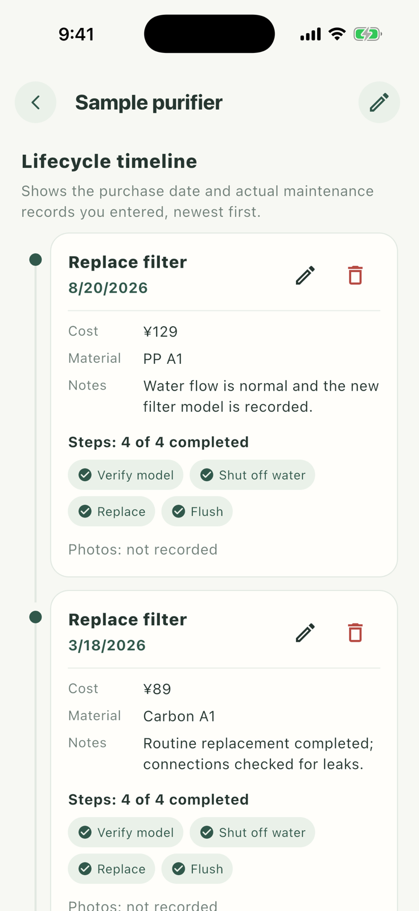
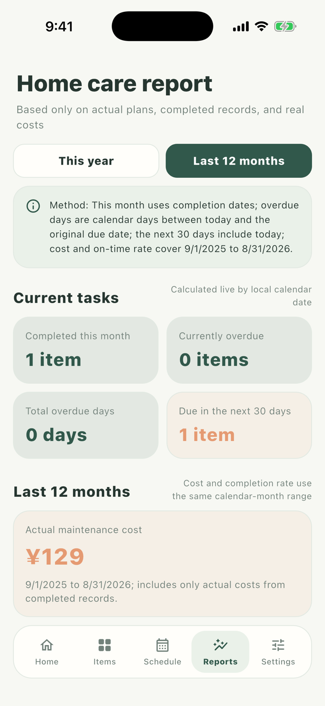

04 · Review real completion records
Review history and costs
Every completion stays in the matching item lifecycle. Reports summarize only real plans, completion dates, and actual costs.


- 1
Review one item’s history
Open the purifier profile and use its lifecycle to see plans, completion dates, steps, costs, materials, and photos.
- 2
Open the household report
Go to Reports and switch between the trailing 12 months and current year.
- 3
Change the cost grouping
Group by item to see each item’s spending, or by category to understand where appliance and consumable costs went.
- 4
Return to the source record
Open the matching item from the cost details and verify the factual maintenance record.